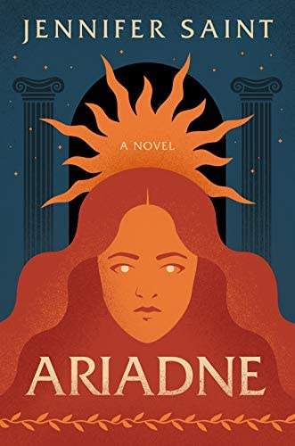
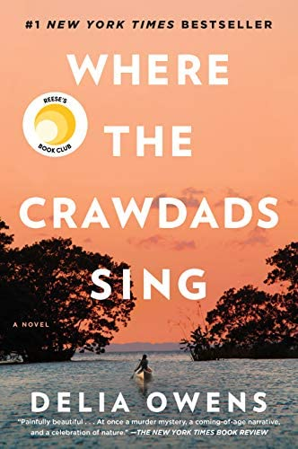
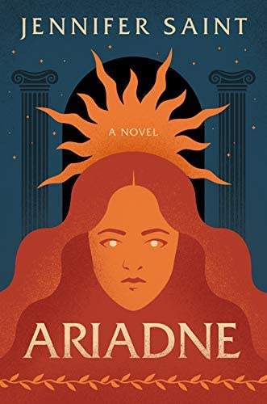
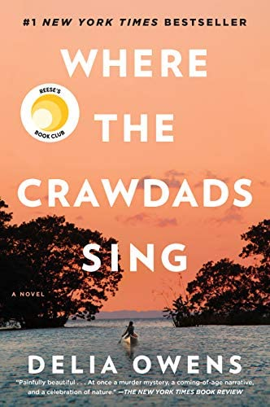

Music
I grew up in a family of musicians, so listening to music has always been something I prioritize, so much so that using Apple Music has become a part of my personality. Here are some songs and albums I've had on repeat recently:


Movies
I took a film class for two years in high school, and ever since then I have been very into going to the movies with friends and using apps like Letterboxd to document what I watch. Here are some of my recent views:


Books
I have always been a bookworm, but during high school I stopped reading as much. This year, my new years resolution was to read more books, and so I started using Goodreads to track how much I was reading. I read 80 books this year because of their 2022 Reading Challenge, here are some of the best!:
 


